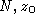

The function lmisolver works essentially in four steps:

where z contains the coefficients of all matrix variables. This step uses extensively sparse matrices to speed up the computation and reduce memory requirement.

where x is a vector containing the independent variables. The computation of  is done using sparse LU functions of Scilab.
Once the equality constraints are eliminated, the problem is reformulated as

where c is a vector, and  are symmetric matrices,
and x contains the independent elements in the matrix
variables
are symmetric matrices,
and x contains the independent elements in the matrix
variables  . (If the
. (If the  's are dependent, a column
compression is performed.)
's are dependent, a column
compression is performed.)
The function semidef is called with the optimization parameters abstol, nu, maxiters, reltol. The parameter M is set above the value
Mbnd*max(sum(abs([F0 ... Fm])))For details about the optimization phase, and the meaning of the above optimization parameters see manual page for semidef.